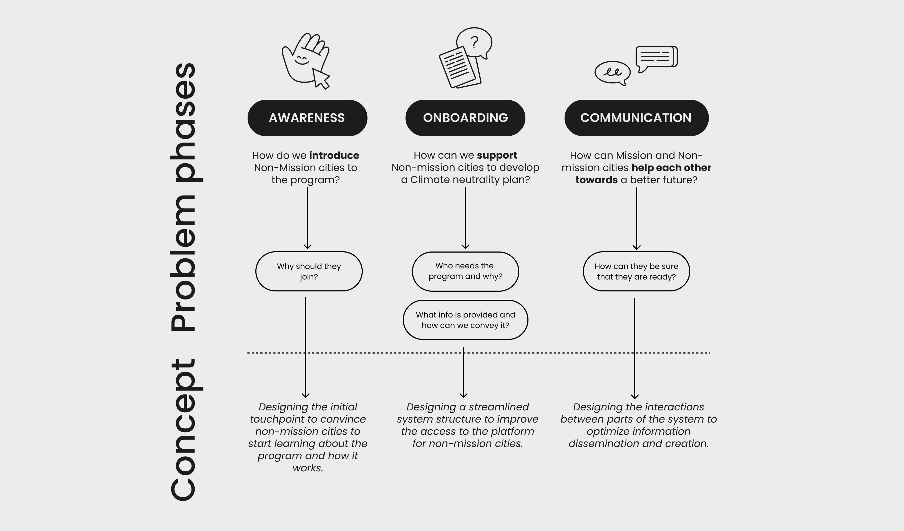
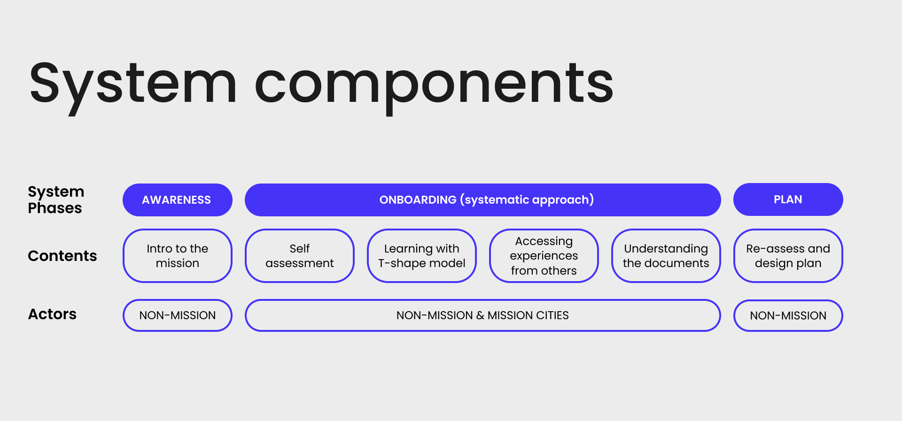
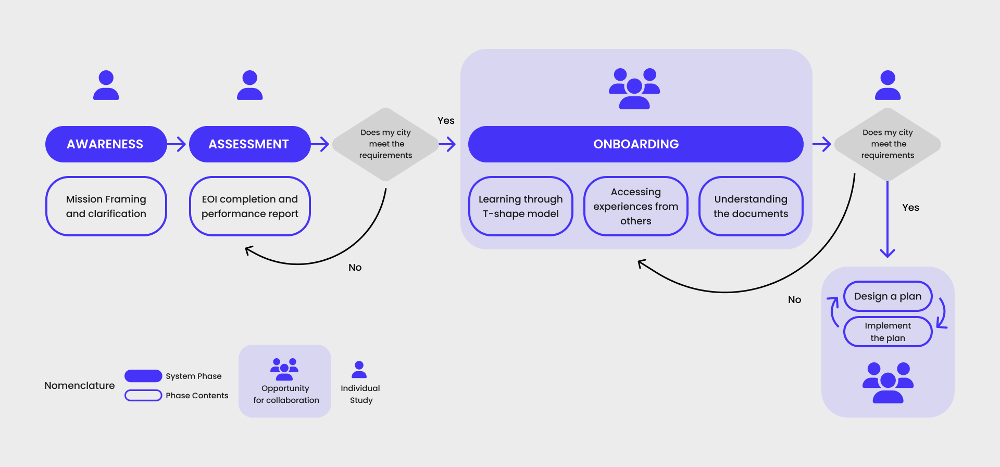
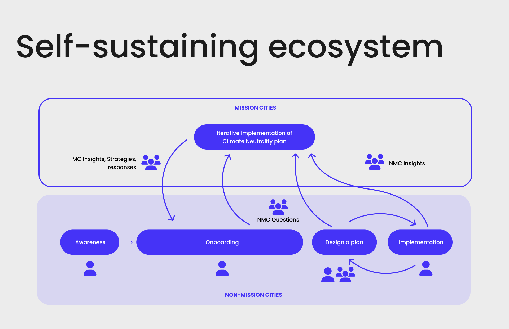
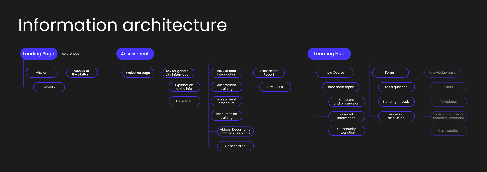
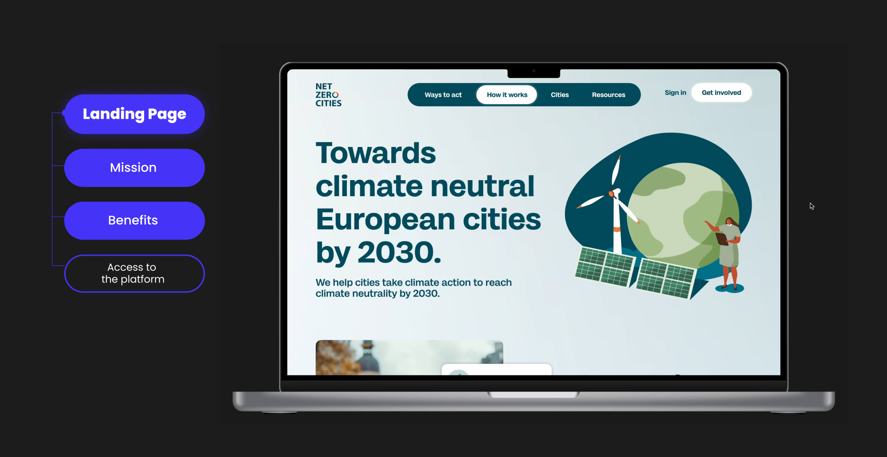
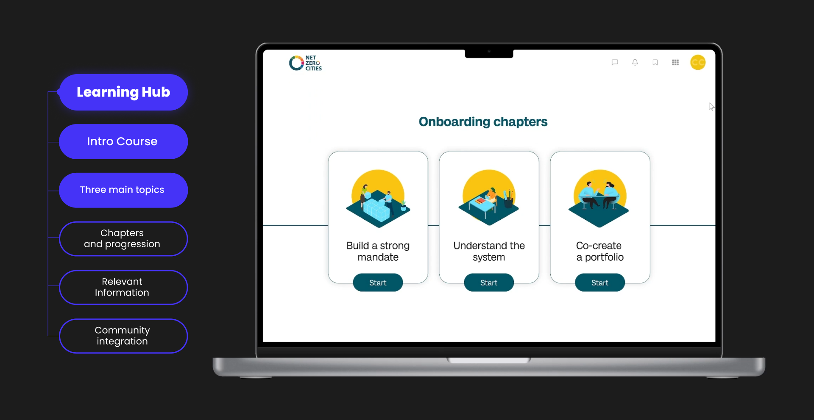
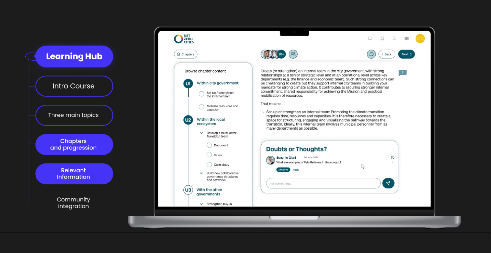
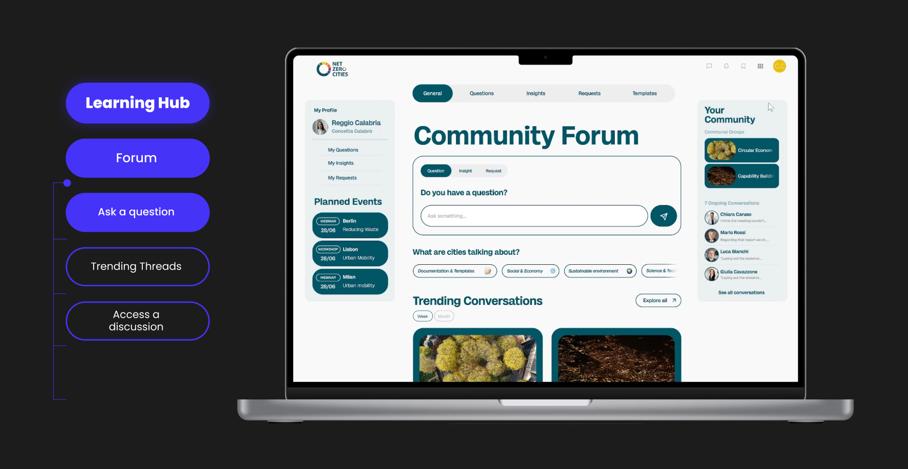

The brief for the user-centred design workshop was to design a learning hub for the NetZeroCities platform to support the journey of cities that want to become Zero Impact.
Our proposed solution aims to support non-mission cities (which are cities who are not part of the Climate neutrality programme) in becoming carbon neutral through a learning hub that covers the entire process, from the first touchpoint to the design of a carbon neutral plan. By facilitating the onboarding process of non-mission cities to the platform, we hope to create a self-sustaining information system through which they can easily access resources and work towards climate neutrality. Because only together we can make a change.
Problem definition to design concept


We started the design process by better defining the problem we wanted to address: how to optimise the learning process and support the application journey of a climate neutrality plan for non-mission cities.
Our proposal consists of three phases. The first phase, Awareness, introduces the concept of climate neutrality to non-mission cities and invites them to join the programme. The second phase, onboarding, equips cities with the necessary knowledge to implement a carbon neutrality plan. The final phase involves the design and implementation of the neutrality plan.

By fostering communication and collaboration between non-mission cities and mission cities, the NZC program aims to create a self-sustaining system where cities can learn from each other, share knowledge, and collectively work towards achieving climate neutrality goals. Our case studies included the collaborative platforms 360Learning and GitHub.
Information architecture and UI
After outlining the problem and solution, we designed the Learning Hub's information architecture. Our proposal divides the Hub into three sections: the landing page (for the awareness phase), the assessment page (transitioning from awareness to onboarding), and the learning area. The learning area includes courses and a community section, fostering a self-sustaining ecosystem. The final section, a knowledge repository, was outside the scope of our project.

The landing page plays a vital role in enriching the community by promoting the flow of information, questions, and new solutions. The onboarding phase offers a user-friendly, multimedia-rich learning experience with a structured layout and progress tracking, similar to many online courses.
The communication page, structured like a forum, provides various channels for users to connect, collaborate, and engage in peer-to-peer learning.



